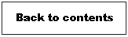

By pressing the following button one can switch to the "Label"-mode.
In this mode you can assign text labels to graph components. Simply left-click on the component.
But only elements of the base graph can be labelled.
The labels can be displayed in this mode by moving the cursor over them.
The picture below shows an example:

Compound graph editor - online help